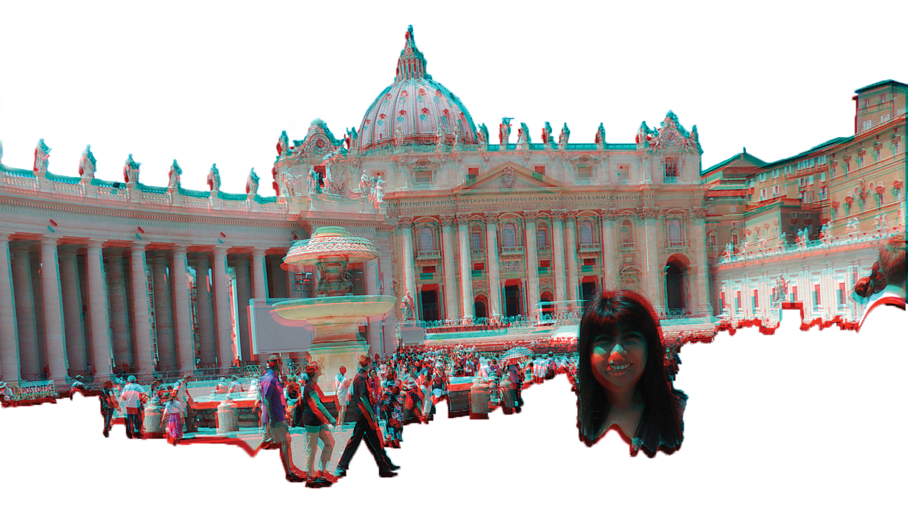

I pushed my way through the crowded Roman bus station, unable to speak one word of Italian. In fact, I couldn’t speak at all. My throat was swollen shut. I looked and sounded like a 50-year-old chain smoker.
“Dove è il prossimo bus?” I croaked.
Determined to find the correct bus stop I carefully recited the Italian phrase for, “Where is the next bus?” that my roommate, Alicia, taught me. I wish I paid more attention when she practiced speaking Italian in the morning. One of the friendly guards pointed toward the west end of Rome’s Termini bus station. Short of breath, I weaved through the crowds. I was a 5-foot-nothing Mexican girl bundled in a thick winter coat, wool scarf and matching gloves in the middle of the warmest Italian summer on record. In the background people cheered me on, but I couldn’t look back. I had to keep running. I was alone in Italy with a high fever and a sore throat, carrying more luggage than a girl my size should.
I had the trip many 20-year-olds only dream of. Alicia left Cal State Fullerton to study abroad in the spring and asked me to join her in Rome to explore Europe. I had always heard stories of Eurotrips gone wrong, but dismissed them as the kind of thing that only happens in the movies. We traveled through Italy, France, Malta and England before landing in Spain.
I was determined to have a memorable trip in Europe. I wanted to see everything these countries had to offer. We gazed at the historic Roman Colosseum, climbed the Eiffel Tower and rode the London Eye.
In Madrid, we set off for a tour of the historic Spanish capital. It was 85 degrees. I wasn’t used to the constant climate change and was fighting a fever. My body was telling me to slow down.
Our tour group met in Plaza del Sol on a sunny June morning, when a smallscale sand storm hit. We were instructed to take cover, but I was too late. My allergies were set off and my eyes swelled up like balloons.
“Do you wanna go back to the hostel? You look like hell,” Alicia said.
“No, I’m fine. Keep moving.”
I didn’t want to ruin our trip. I bought cough medicine and eye drops at the local pharmacy instead. By the time we got back to our room, I felt dizzy. I couldn’t control my breathing. I took the cough medicine and went straight to bed.
I woke my roommate up in a frantic cry for help at around 3 a.m. Sweating and shivering, I reached for anything that could keep me war m. If I wasn’t scared before, the nervous look on Alicia’s face did the trick. She was panicking. After wrapping me up in several layers of sweat pants and blankets, she resolved to slee p on top of me for body heat. I shivered until I blacked our.
Our flight to Rome left early the next morning. Alicia helped me through the airport, making sure I was hydrated. She attempted to feed me to no avail. My throat was swollen shut, forcing us to communicate with a pen and pencil. After various trips to the pharmacy and countless doses of antibiotics, the swelling in my throat finally went down. I thought about taking an early flight home with Alicia – her flight was scheduled two days before mine.
I couldn’t bring myself to leave. I convinced myself I would get better. Reluctantly, Alicia left me in Rome with enough water and antibiotics to stay alive. I wish she had left her English-to-Italian dictionary too.
My new found health was short lived. My throat began to swell up again once I was alone. I felt lethargic and struggled to get out of bed to use the bathroom or eat. This was the first symptom of Lemierre’s syndrome. The bacterial infection creates an abscess – a pocket filled with blood – near the tonsils, causing severe swelling around the neck. I figured it was just fever. It would go away. I romanticized the entire situation in my hazy trip.
Being sick in Rome was better than being sick in middle of nowhere, California. It was 8 a.m. and I couldn’t stop sprinting through Termini. If I missed the bus, I would have to find a cab to Leonardo da Vinci – Fiumicino Airport for the hefty price of 50 euros. I cursed Alicia’s name a thousand times. Why couldn’t she convince me to leave? I made it to the west end of Termini to the Terravision stop. Tears of joy ran down my face as I saw the bright purple bus awaiting my arrival. My blood ran cold when I realized the bus was empty.
No one was allowed to board because of maintenance. The next bus would depart at 10 a.m. I had to move quickly. I ran back across Termini to catch a cab, knocking people over. The cheers that filled the bus station moments ago quickly turned into angry shouting.
Once at Fiumicino Airport, I ran to the check-in desk. “I’m here to check in for the 11 a.m. flight to Los Angeles.” The flight attendant was visibly annoyed.
“I’m sorry, but you’ll have to see the front desk We stopped checking that flight in eight minutes ago.”
“No!” I cried. “Please, you have to let me board. I can’t stay here. Please, you don’t understand.” By then a crowd had gathered at the check-in booth. I saw security coming and tried my best to pull it together. I couldn’t help it – tears filled my eyes.
I was experiencing photophobia, the second symptom of Lemierre’s syndrome. Photophobia causes temporary blindness. Patients report seeing bright colors before blacking out.
The security guard caught me before I hit the ground.
I quickly snapped back to reality. The guard let me stand by myself. I didn’t let them call a doctor. I needed to go home.
The flight attendant switched my seat to the next available flight in 12 hours. I set up camp in the airport, determined to stay awake. I was not going to miss my flight again. I found a spot on the cold ground. It wasn’t very comfortable, but it would have to do.
As I dozed off, I felt a sharp pain in my chest. This is the third symptom of Lemierre’s syndrome. Bacteria makes its way down a pulmonary vein and into the heart vessels. Many patients experience sharp pains and shortness of breath, leading to severe pneumonia.
I struggled to breathe steadily, which caught the attention of a friendly looking couple nearby. Before they had the chance to say anything, I got defensive.
“I’m fine. It’s just a cough, it will go away,” I said.
They smiled, and turned away. Once I could check in, I dragged my bags to the front desk.
I made quite an impression on the airport staff. The woman at the counter from the day before pulled me to the side. She seemed apologetic as she instructed me to follow her to the back. The head of airport security – a tall, proud-looking man with a thick, black mustache and a neatly pressed royal blue uniform – greeted me at the entrance.
“What are you doing in Rome?” he asked.
“I’m on vacation.”
“I heard about your situation yesterday. Are you sick?” I panicked.
“No, I mean I had a slight cough but it’s gone now.”
He explained that I could not board the plane if I was too sick, not wanting to put the other passengers in danger.
After a brief conversation, he instructed the woman from the front desk to thoroughly inspect my bags. He turned to me as he walked away.
“I have eyes throughout the entire airport. I want you to know, we’re all keeping an eye on you,” he warned. I leaned against the wall, trying desperately to keep from collapsing.
“Great,” I grumbled to myself. “They think I’m a terrorist.” The woman handed me a chair as soon as the security guard was out of sight. She must have pitied me as I watched her tear apart the neatly packed bags.
Once I was cleared, she escorted me through a second round of security and onto my seat on the plane. I arrived at the Los Angeles International Airport, at 9 p.m. My mother and grandfather welcomed me at the airport with open arms. I hugged them as tight as I could.
“Mom, I need to go to the hospital,” I said. She looked puzzled.
“Mija, you’re pale. What’s wrong?” she said.
The terminal spun.
I should have called an ambulance right away but I didn’t want to scare my grandfather.
I persuaded my mom to wait to call the hospital until we got him home. It was an hour drive to San Bernardino.
I arrived at Loma Linda University Hospital’s emergency room at 10 p.m. and was quickly admitted to the intensive care unit. It took three days, two computed tomography (CT) scans and daily blood work for the doctors to diagnose my illness. Lemierre’s syndrome is extremely rare – it’s commonly referred to as the “forgotten disease.” The incidence rate is 0.8 cases per million in the general population. Doctors say it’s most common in healthy young adults, such as myself.
Tubes and wires ran through my body. I had a chest tube on either side to drain the fluids that filled my collapsed lungs.
I had a new nurse everyday during my twoweek hospital stay. I never got tired of seeing the bewildered look on their faces as they wondered what Lemierre’s syndrome was.
Some even googled the disease in front of me. It was a parent’s nightmare. They blamed themselves for the whole mess. My mother constantly mumbled about how she shouldn’t have let me go to Europe in the first place. Terrified, she brought a priest in to sprinkle me with holy water.
The severity of my illness was lost on me during my hospital stay. Death never crossed my mind. I was annoyed, more than anything. Hospitals make me uncomfortable. I hated being confined to a bed for 15 days, unable to walk on my own.
Once I was released, the doctors ordered me to relax and to stay indoors. I was strapped to a machine through a peripherally inserted central catheter (PICC) line in my arm that fed me antibiotics for an additional three weeks. The possibility of my lungs recollapsing is very real – Lemierre’s syndrome may return at a moment’s notice. I’ve been forced to adapt a healthier lifestyle, and even quit smoking at the behest of my doctor. My father quit smoking in solidarity.
Despite my discomfort of the doctor’s office, I can’t ignore my body’s warnings. I’ve learned to tone down my stubborn nature to seek medical attention at the first sign of a problem. The overwhelming support of my friends and family has shown me that I can get through anything – even a rare lung disease. Given time, I am confident my body will make a full recovery.